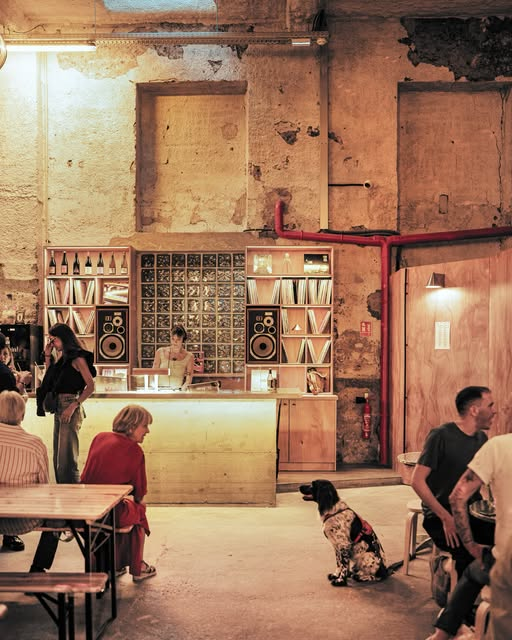
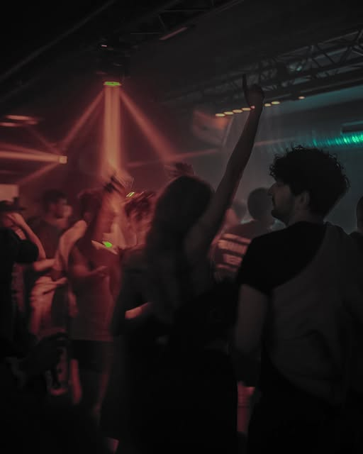
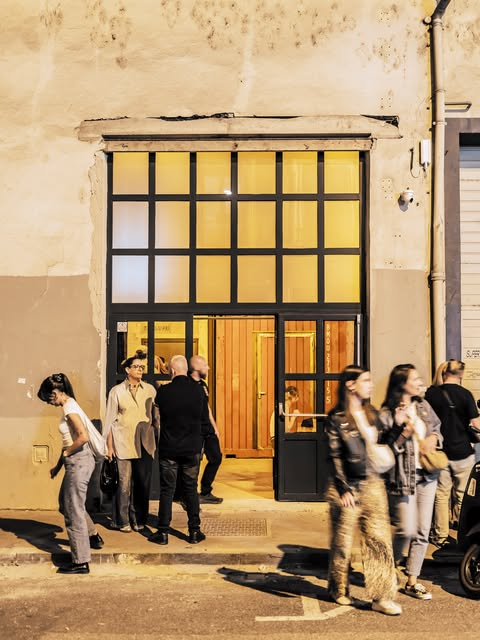
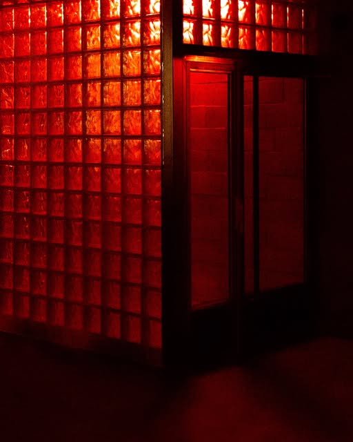
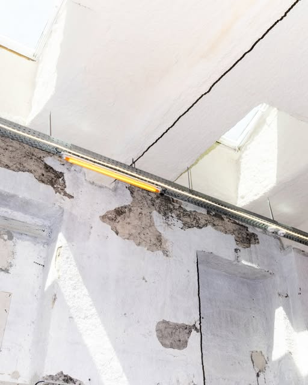

[PHOTO À FOURNIR PAR LE BAR]
Terrasse
Une grande terrasse.
Un ancien garage de 350 m², devenu lieu de vie et club.
Slow opening du 24 au 27 septembre 2026

Le lieu
Plâtre brut, bois clair, briques de verre, enceintes et disques.
[PHOTO À FOURNIR PAR LE BAR]
Une grande terrasse.
Bières locales, vins vivants, cocktails.

Un club intimiste. Électronique locale et indépendante.
[PHOTO À FOURNIR PAR LE BAR]
À venir. Ouverture et carte : [À CONFIRMER]
350 m²d’ancien garage
10,4 kabonnés sur @super7_lyon

40 rue Saint-Jérôme
Lyon 7e, ancien garage
Super7, 40 rue Saint-Jérôme, Lyon 7e
Jeudi à dimanche, de 17h à 01h, pour le moment.
Exemple de semaine, vu sur Instagram
À jour au 15 au 18 oct. [À CONFIRMER]
Jean Granon & RhahisBar
Cornelius DoctorClub
LéonBar
RoxaneClub
6_Sour & MenzBar
DJ ChuimixClub
Je t’aime Rachel LBar
IMA:RClub
Planche contact



[PHOTO À FOURNIR PAR LE BAR] La terrasse, en fin de journée.
[PHOTO À FOURNIR PAR LE BAR] Quand l’espace ouvrira.
Après le coucher du soleil
Briques de verre, béton brut, bois. Un club intimiste.
Slow opening, 24 au 27 septembre 2026
Line-up du slow opening vu sur Instagram. [À CONFIRMER]
17H01HGratuit
Venir
Jeudi à dimanche, 17h à 01h, pour le moment.
Transports et vélo : [À CONFIRMER]
Téléphone : [À CONFIRMER]